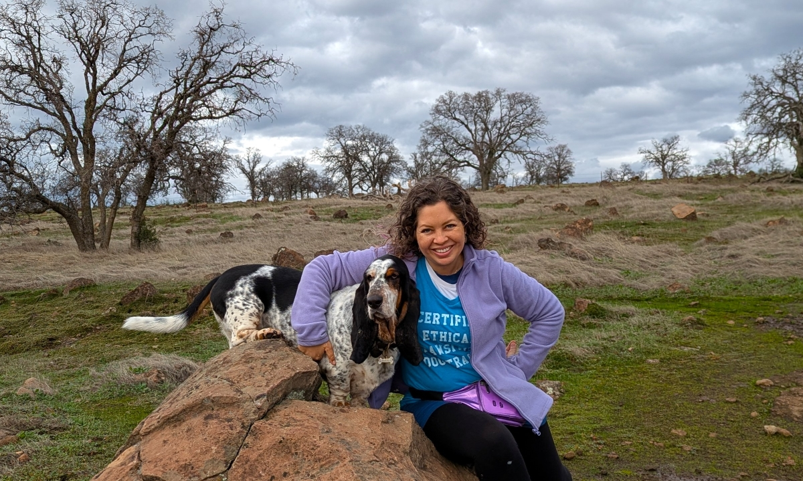

Hi, I'm Alyssa!
Let me tell you a little bit about myself...
I am living out my God-given calling by coaching people and their dogs—work I love and I'm grateful to do every day.
Like you, I love dogs deeply. But as much joy as our canine companions bring into our lives, sharing a home with them can sometimes feel overwhelming. Barking at other dogs, potty training struggles, leash pulling, and other unwanted behaviors can add stress for both humans and dogs. Often, it's not the dogs who need the most help—it's us humans who need clear guidance on how to communicate effectively with them. That's where I come in.
As a certified Dog Trainer and Behavior Consultant, I help families build cooperative, trusting relationships with their dogs. My mission is to provide ethical, force-free, science-backed training that supports the whole dog—physically, emotionally, and environmentally. When dogs feel safe, understood, and supported, their ability to learn and follow your rules comes quickly. I'm honored to serve Chico, California and the surrounding areas, and I would love to help you and your dog achieve your goals together. 🐾

How I Got Here
Animals have been part of my life for as long as I can remember. Growing up in an apartment filled with birds, fish, a snake, rats, hermit crabs, rabbits, and hamsters, there was never a shortage of creatures to care for—but dogs always had my heart. I happily groomed, fed, and walked the family dogs whenever I had the chance, and some of my favorite childhood memories are with Zeus the Husky, Mara the Malamute, Tilly the Chihuahua, and Zoe the Boxer.
That love for animals led me to work as a veterinary technician the summer before college and then to pursue a Bachelor of Science in Animal Science at Cal Poly, San Luis Obispo. As part of the pre-veterinary program, I studied nutrition, anatomy, and physiology, and gained extensive hands-on experience caring for both livestock and companion animals. While at Cal Poly, I also volunteered as an Advanced Canine Handler at the local Humane Society, where I trained shelter dogs in basic manners and helped prepare them for adoption. For my senior project I traveled to Bermuda to train dolphins for Dolphin Quest—an unforgettable experience that opened my eyes to the field of animal learning and behavior.
Soon after graduation I moved to Humboldt County to earn my Master of Art Degree in Social Science in Environment and Community at Cal Poly Humboldt. There, I discovered a deep passion for coaching and teaching while working as an Academic Advisor and leading student workshops. I knew then that my future would involve both educating adults and working with animals.
After graduating with two degrees, I still felt uncertain about which career path to pursue. It wasn't until a God-ordained conversation with a friend from church—who shared that her sister was a professional dog trainer—that I even realized this could be a viable career. After much prayer and research, that single interaction ultimately led me to the Bay Area so I could pursue certification as a dog trainer and behavior consultant. I was accepted into the Dog Training Internship Academy (DTIA) in San Francisco—often considered the “Harvard” of dog training schools—founded by renowned trainer Janis Bradley of the San Francisco SPCA Academy for Dog Trainers. Through DTIA's intensive six-month program, I received a comprehensive education in science-based, force-free dog training and behavior counseling, working hands-on with real behavior cases, receiving individualized coaching, and logging hundreds of hours of training experience.
After completing the program, I launched my first business, Dancing Tails Dog Training, in Berkeley, California, where I served the community from 2015 to 2018. After my husband and I welcomed our daughter into the world, we moved to Chico, where I spent five years as the head trainer and instructor with The Canine Connection. In November 2024, God called me to step out on my own once again to create Alyssa Hosbach Dog Training. Today, I bring this blend of education, experience, and heart to every client I work with. Helping people and their dogs build relationship, clear communication, and a joyful life together is truly what I was meant to do.
My Philosophy
Force-free is the way
As a force-free dog trainer, I do not use fear, pain, shock, etc. Instead, I exclusively use "positive reinforcement" and "negative punishment" techniques. Positive reinforcement is adding something good to increase a behavior. Negative punishment is delaying something good to decrease a behavior.
For more information, see this fantastic write-up from the American Kennel Club on positive reinforcement dog training. In addition, this white paper from the American Veterinary Society of Animal Behavior provides detail on the adverse effects of punishment-based training.
Coaching the human is most effective
Some dog trainers use board-and-train models, where you drop your dog off with the trainer for (typically) weeks at a time and the trainer trains your dog. I don't use this approach. I find it is far more effective for me to work with and coach you, the dog's "person," so that both you and your dog leave with the skills and tools needed to thrive long-term.
Why Work With Me
When you work with me, the focus isn't just on your dog, but how you can partner with your dog to effect lasting change. There are many dog trainers out there, and some of them use humane methods and are actually quite good (thank God!). I bring you over a decade of professional, force-free dog training experience. I've worked with dozens of different breeds of all different ages (puppies to seniors) on nearly every behavior issue you can imagine. And I use this wealth of experience, combined with care and compassion, to work with you to find real, lasting success for you and your dog.
In Summary
- Trainer-instructor at The Canine Connection in Chico, CA (2019-2024)
- Owner of Dancing Tails Dog Training in Berkeley, CA (2015-2018)
- Certified Dog Trainer and Behavior Consultant by the Dog Training Internship Academy (2014)
- M.A. in Environment & Community from Humboldt State University (2012)
B.S. in Animal Science from Cal Poly, San Luis Obispo (2009) - Marine Mammal Trainer for Dolphin Quest, Bermuda (2007)
Reviews From Real Clients
Alyssa is wonderful! We got our cute little jack Russel in 2020, and to say I had some worries considering her bread and the stigma of her bread was an understatement. Alyssa was awesome with helping us teach Lucy early on what a soft bite was, helped us with crate training tips and tricks, and has continued to be a great resource as Lucy has grown older.
 Haley McCarty
Client
Haley McCarty
Client
Alyssa was such a strong influence in the training of our puppy. He was so unruly and wild. After spending an hour a week with her and us working on him at home, he is now the most well-behaved and complimented dog I've ever seen. Highly recommended. Thanks Alyssa!
 Don Spencer
Client
Don Spencer
Client
I encountered Alyssa during a puppy training class. I really appreciated the very clear instructions and the coaching she provided to help me teach my puppy basic manners. She was full of tips to help me adjust to having a new puppy. My 6 weeks of training with Alyssa was a great start to teaching me and my puppy manners and it alleviated the stress of having a misbehaved dog.
 Rachael Slater
Client
Rachael Slater
Client
I'm so grateful for Alyssa and her positive, compassionate approach to dog training. She's helped my fear-based reactive dog become so much more comfortable and confident in his environment. Her guidance and practical tips have made a huge difference for both of us. I highly recommend her to anyone looking for a thoughtful, effective, and kind trainer. Thank you for empowering me to support my pup with patience, knowledge, and understanding—we're both so much happier thanks to you!
 Mieke DeWitt
Client
Mieke DeWitt
Client
Alyssa came to our house for a 1.5 hour consultation. She was so sweet and understanding with my puppy. All of our questions and concerns were answered….she had an explanation for everything and it all came together to make sense. She gave us ideas that we hadn't thought of and made us feel comfortable with having a new puppy. We will be doing her weekly group classes starting soon.
 Sage Bowman
Client
Sage Bowman
Client